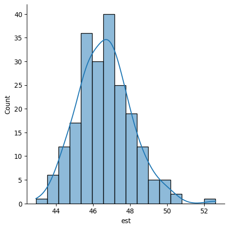
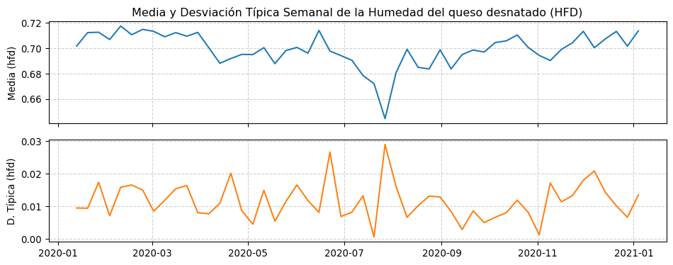

7Caso 1. Análisis de una fabricación de queso camembert usando Google Colab.
En este ejercicio usaremos un fichero o archivo de datos en formato CSV que habremos exportado previamente desde nuestra hoja de cálculo. Más adelante aprenderemos cómo leer directamente los datos de nuestras hojas Excel.
En este cuaderno vamos a cargar los datos desde GitHub; estos datos pueden ser descargados en el ordenador o Google Drive de cada uno, junto con el cuaderno, en los enlaces facilitados al principio. Una vez en Drive, puede leerse la tabla mediante el método que vimos al final del capítulo anterior.
import pandas as pdimport matplotlib.pyplot as pltimport seaborn as snsurl_datos ='https://raw.githubusercontent.com/juanriera/master-queseria/master/datos/camembert.csv'try: df = pd.read_csv(url_datos, decimal =",", sep=';', encoding='ISO-8859-1')print("¡Archivo ", url_datos," cargado correctamente!")print(f"Dimensiones de los datos: {df.shape}")exceptExceptionas e:print(f"Error al cargar el archivo: {e}")
¡Archivo https://raw.githubusercontent.com/juanriera/master-queseria/master/datos/camembert.csv cargado correctamente!
Dimensiones de los datos: (211, 7)
Podemos mostrar el dataframe que hemos leído, mediante la funcion .head(), que nos muestra las cinco primeras lineas.
df.head()
fecha
fabricacion
est
mg
ph
cloruros
coliformes
0
11/01/2020
1
46.68
24.0
4.85
1.50
80.0
1
12/01/2020
1
48.09
25.0
4.67
1.61
0.0
2
13/01/2020
1
45.97
24.0
4.71
1.48
9200.0
3
14/01/2020
1
46.24
23.5
4.78
1.69
20.0
4
15/01/2020
1
45.81
23.0
4.77
1.56
150.0
También podemos usar la función .info(), que nos dice la estructura interna de nuestro dataframe y el tipo de los datos (entero, numérico, carácter…). Dado que la fecha, como hemos visto, está formateada como fecha y asignada como ìndex, ya no aparece en el listado de columnas de datos, sino que aparece en la primera línea como DateTimeIndex, y la informacion nos dice los límites de esas fechas.
Una vez leído correctamente el DataFrame, podemos hacer algunos gráficos de sus columnas numéricas. También usaremos las funciones de seaborn que producen salidas muy atractivas y son funcionjes fáciles de manejar.
Exploremos los resultados de análisis de extracto seco total, recogidos en la variable est de nuestro DataFrame.
Para ello empezamos haciendo el histograma con seaborn, que nos permite incluir una curva de densidad fácilmente (pregunta: ¿qué es una curva de densidad?)
sns.displot(df["est"], kde =True)plt.show()

Los histogramas nos muestran con claridad la distribución de los datos: los valores más frecuentes están entre 45% y 47%, y hay algún valor un poco más alto, por encima de 52%, que no parece que haya ocurrido muchas veces.
El boxplot
sns.boxplot(df['est'])plt.show()
Los gráficos de series temporales
En la celda en la que hemos obtenido la información del DataFrame con df.info(), veíamos que la columna fecha se lee como un object. En Python, un object es, por ejemplo, una cadena de caracteres. Python no tiene forma de saber que esto es una fecha, a menos que convirtamos explcícitamente el tipo de dato en fecha. Para ello, Python dispone de funciones muy sofisticadas que es muy conveniente conocer. Vamos, en primer lugar a dar el formato fecha a la columna, mediantela función ’Datetime
# Reemplazar la columna 'fecha' in-placedf['fecha'] = pd.to_datetime( df['fecha'], format='%d/%m/%Y', errors='coerce'# Mantiene la robustez ante datos incorrectos)# Opcional: Verificar el cambioprint(df['fecha'].head())print(df['fecha'].dtype)
Para representar los datos por mes, sólo tenemos que crear una nueva columna mes indicando a pandas que extraiga del índice la parte de fecha que corresponde al mes. ¿Fácil, no?
En vez de usar el número para el mes, podemos usar el código de letras abreviado (en este caso, seabornutiliza la abreviatura en inglés, pero hemos cambiado la codificación para que lo represente en español, en la instruccion locale que hemos usado en la primera casilla). Aprovechamos para personalizar un poco el gráfico.
df['mes_abreviado'] = df.index.strftime('%b')sns.boxplot(x='mes_abreviado', y='est', data=df)# Opcional: Personalizar el gráficoplt.title('Boxplot de la variable "est" por Mes')plt.xlabel('Mes')plt.ylabel('Valor de "est"')plt.grid(axis='y', linestyle='--', alpha=0.7) # Añadir una cuadrícula para mejor lecturaplt.xticks(rotation=45) # Rotar las etiquetas del eje X si son muchasplt.tight_layout() # Ajusta automáticamente los parámetros de la subtrama para un diseño ajustadoplt.show()
sns.jointplot(x="est", y="mg", data = df[~df.index.duplicated(keep='first')])
Finalmente, una serie de cálculos más complejos para obtener los gráficos de capacidad de un proceso, como muestra de cómo se pueden usar las funciones y gráficos de Python para prácticamente cualquier necesidad.
A continuación, una serie de celdas que realizan gráficos diversos, puedes dedicar un rato a estudiarlas e intentar comprender bien su programación.
df2['semana'] = df2.index # necesitamos la semana en una columna de valordf3 = pd.melt(df2, id_vars= ['semana'], value_vars=["mean","LSL", "USL"], value_name="valores")
g = sns.lineplot(data=df3, x="semana", y="valores", hue="variable")
import pandas as pdimport seaborn as snsimport matplotlib.pyplot as plturl_datos ='https://raw.githubusercontent.com/juanriera/master-queseria/master/datos/camembert.csv'try: df = pd.read_csv(url_datos, decimal =",", sep=';', encoding='ISO-8859-1')exceptExceptionas e:print(f"Error al cargar el archivo: {e}")df['fecha'] = pd.to_datetime( df['fecha'], format='%d/%m/%Y', errors='coerce'# Si hay una fecha inválida, la convierte a 'NaT' (Not a Time) en lugar de fallar.)df['fecha_index']= pd.DatetimeIndex(df.fecha).normalize()df.set_index('fecha_index',inplace=True)df.sort_index(inplace=True)
df["hfd"] = (100.0- df['est']) / (100.0- df['mg'])# --- 1. Preparación de los datos (Calculando la Media y la Desviación Típica Semanal) ---media_semanal = df["hfd"].resample('W-MON').mean()dt_semanal = df["hfd"].resample('W-MON').std()# --- 2. Creación de los Subgráficos (El paso clave) ---# Creamos una figura (conjunto de gráficos) con 2 filas y 1 columna.# El parámetro 'figsize=(10, 4)' controla el tamaño: 10 de ancho y 4 de alto total (como un gráfico normal).# 'sharex=True' asegura que ambos gráficos compartan el mismo eje temporal.fig, (ax1, ax2) = plt.subplots( nrows=2, ncols=1, figsize=(10, 4), sharex=True)# --- 3. Graficar la Media (Gráfico Superior) ---ax1.plot(media_semanal, label="Media Semanal", color='tab:blue')ax1.set_title("Media y Desviación Típica Semanal de la Humedad del queso desnatado (HFD)")ax1.set_ylabel("Media (hfd)")ax1.grid(True, linestyle='--', alpha=0.6)ax1.tick_params(labelbottom=False) # Quita las etiquetas de fecha/hora del gráfico superior# --- 4. Graficar la Desviación Típica (Gráfico Inferior) ---ax2.plot(dt_semanal, label="Desviación Típica Semanal", color='tab:orange')ax2.set_ylabel("D. Típica (hfd)")ax2.grid(True, linestyle='--', alpha=0.6)# Ajusta el espacio entre los gráficos para que no se superponganfig.tight_layout() plt.show()

import pandas as pdimport matplotlib.pyplot as plt# --- 1. Preparación de los datos (Usando tus variables ya calculadas) ---# media_semanal = df["est"].resample('W-MON').mean()# dt_semanal = df["est"].resample('W-MON').std()# --- 2. Creación de los Subgráficos ---fig, (ax1, ax2) = plt.subplots( nrows=2, ncols=1, figsize=(10, 4), sharex=True)# --- 3. Graficar la Media (Gráfico Superior) ---ax1.plot(media_semanal, label="Media Semanal", color='tab:blue')ax1.set_title("Media y Desviación Típica Semanal del Extracto Seco Total")ax1.set_ylabel("Media (est)")ax1.grid(True, linestyle='--', alpha=0.6)ax1.tick_params(labelbottom=False) # ¡Importante! Oculta las etiquetas X en el gráfico superior# --- 4. Graficar la Desviación Típica (Gráfico Inferior) ---ax2.plot(dt_semanal, label="Desviación Típica Semanal", color='tab:orange')ax2.set_ylabel("D. Típica (est)")ax2.set_xlabel("Fecha") # Añadimos la etiqueta de fecha al gráfico inferiorax2.grid(True, linestyle='--', alpha=0.6)# --- 5. Ajuste para eliminar el espacio vertical (El paso clave) ---plt.subplots_adjust(hspace=0) # Ajuste el espacio entre los gráficos para que no se superpongan# Nota: 'tight_layout' puede interferir si no se ajusta con cuidado, por eso usamos plt.subplots_adjustplt.show()